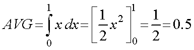
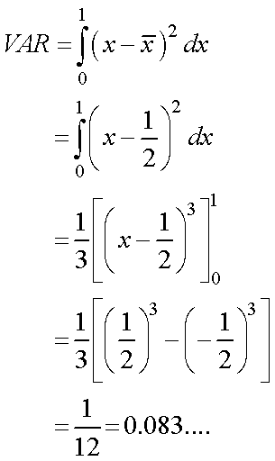

単純な例として，
０～１の間でランダムに数字を発生させ，平均，分散を求める
を行ってみましょう．
平均，分散は，計算から，
・ 平均

・ 分散

となります．
シミュレーションとしては，LabView，を用いて，
乱数を多数発生させる
そこから一部を取り出し，平均，分散を出す
この作業を多数行い，平均（平均の平均，分散の平均）を導き出す
という作業を行ってみましょう．
その結果，
となり，やはり，n-1，の方が正しい値となりますね．
シミュレーションプログラムを，こちら，に置いておきますので，参考にしてみてください．